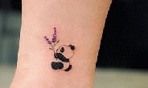

LadyDark Tattoo

Transmiten, lo que quieren decir, que sólo con pocos trazos o sencillos símbolos pueden llegar a ser verdaderas declaraciones de nuestros sentimientos, opiniones, punto de vistas, sueños… etc.